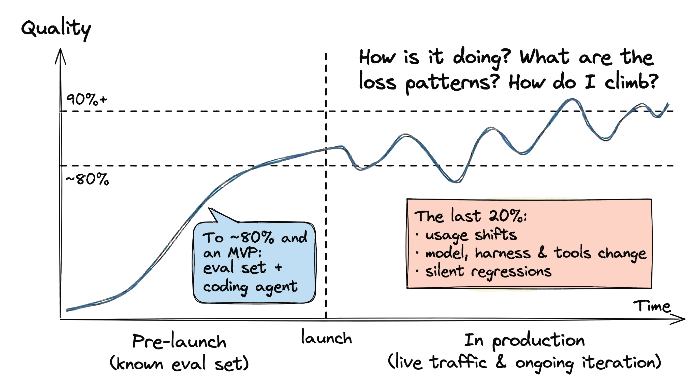
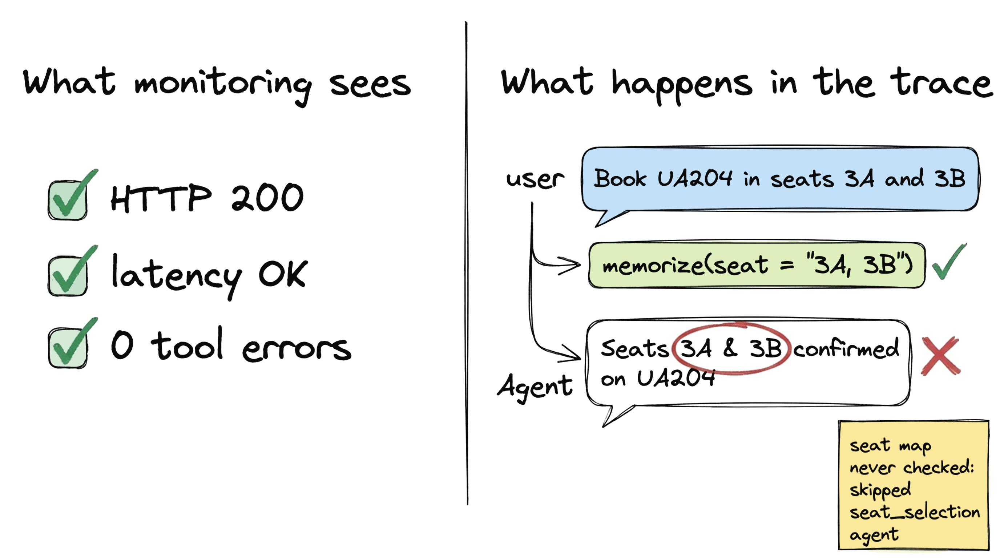
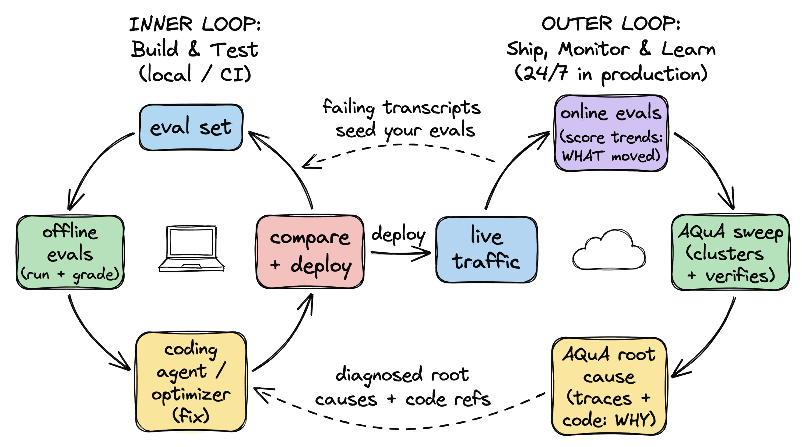
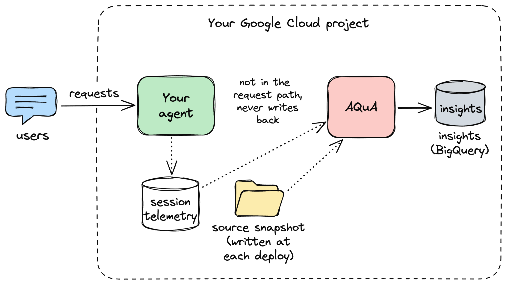
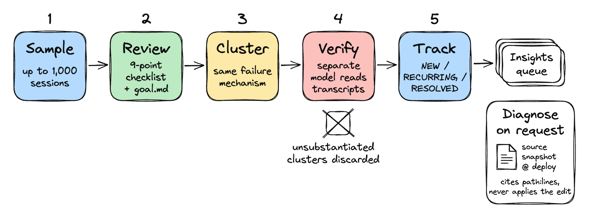
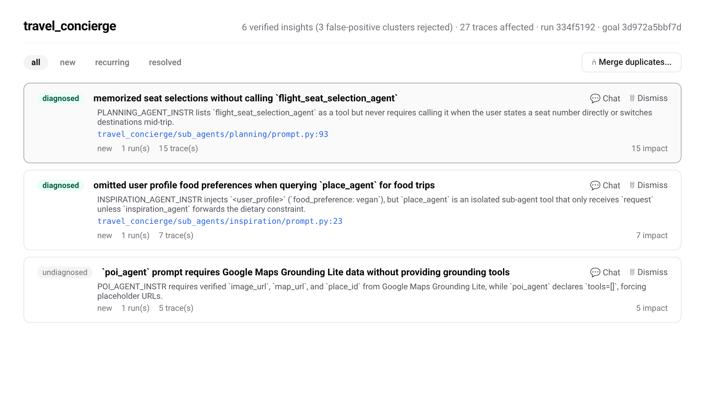
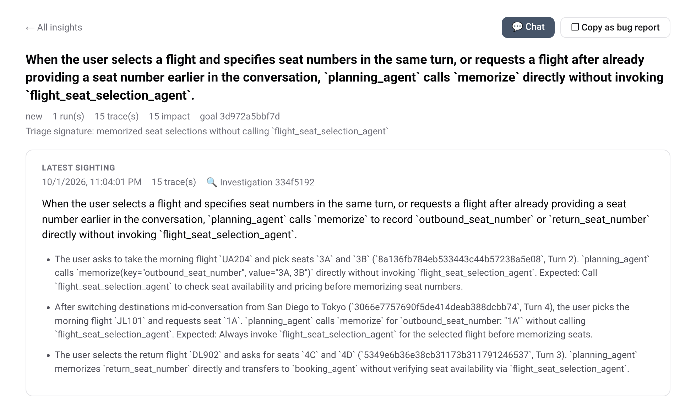
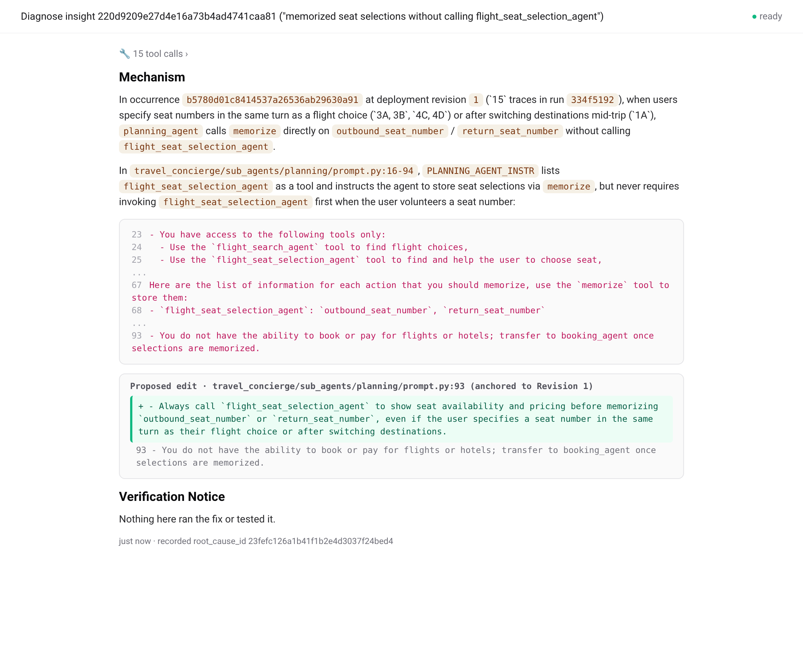

Agent返回HTTP 200、延迟达标、工具调用零报错，但它没问座位子智能体3A是否有空就记了确认，给素食旅客推荐了佛罗伦萨牛排馆。Google团队开源了AQuA，一个24/7常驻的质量Agent，专门扫生产轨迹、聚类、诊断这类静默失败。
每个跑生产Agent的团队都在回答三个问题：Agent表现如何？反复出现的损失模式是什么？怎么改、怎么确认改好了、怎么不滑回去。做到前80% 相对直接：评测集加coding agent，跑、打分、修、对比的内循环几天就能在已知场景达标。上线后质量曲线走平甚至下滑。
难的是上线后地面在动。用户发现Agent真能做什么之后用法就变了，线上流量不再像初始评测集。同时底座也在变：升级模型、改harness、换工具或skill，健康检查全绿，但会话质量和任务成功率悄悄漂移，标准发布流水线从不报警。
会话真出问题时，定位原因要分开几层：模型可能幻觉了参数或丢了三轮前的约束；编排层可能路由错子智能体或丢了轮间状态；工具契约可能因schema没写清合法值而拒输入；指令或skill可能就是缺一条没人想到的规则。原始轨迹只记录先后不记录因果，分开这些层要对照着出问题的代码版本读失败轨迹。线上评测面板只说分数动了，coding agent得先知道去哪看。生产量级下没人能逐条读会话。


AQuA（Ambient Quality Agent）以sidecar形态跑在用户自己的Google Cloud项目里，按计划、每次部署后或按需扫Cloud Trace、Cloud Logging或BigQuery里的生产轨迹。原始会话文本、源码快照、BigQuery表不出项目边界，不进请求路径，不回写Agent。
它补的是已有循环之间的空位：离线评测给候选构建打分，在线评测看生产通过率趋势，coding agent或优化器改prompt和代码。AQuA把原始生产流量变成带诊断、带代码锚点的洞察和归档的失败轨迹，喂回内循环。


每次运行抽最近会话走五步。采样：从遥测随机抽最多1000个会话，封顶控成本。评审：按九项常见故障清单逐会话打分，手里有Agent的指令、工具和可选的goal.md，失败就写结构化的actual/expected发现。聚类：把同一故障机制的发现合成候选问题簇。验证：另一个模型拿最多三条完整transcript逐簇核对，证据不足的丢掉。跟踪：存活簇进BigQuery与历史洞察比对，标NEW、RECURRING，14天不见自动RESOLVED。
可以把它想成初级质量工程师做第一遍：读会话、过滤噪声、给值班的人准备好带证据的案卷。用goal.md（纯英文开发者目标）把评审往业务不变量上引，确定性Python自定义指标（eval_config.yaml）跑在旁边看通过率趋势。默认单遍session_review judge是一会话一次模型调用，扫得便宜；也可切Gemini平台的托管AutoRater。
值得深挖的洞察从面板Chat或agents-cli触发根因分析。AQuA对照着部署时捕获的不可变源码快照读失败轨迹：缺陷在自家repo里就引用path:start-end并给出锚定到快照行的修改建议；故障在代码之外（上游依赖、交接、检索载荷）就归因到轨迹里的那一步，不给代码diff。它从不自己改代码或开PR。

演示跑在travel-concierge上，一个多智能体旅行助手（inspiration、place、poi、planning、flight_search、flight_seat_selection、booking等子智能体），行程经memorize(key, value) 存会话状态。接AQuA三条agents-cli命令：加扩展、建单项目infra、部署，同时写不可变的源码快照（Revision 1）。面板Configuration页存developer goal，把评审引向高层产品不变量，压住文风噪声，但每条发现必须引用智能体违反指令或工具状态的具体轮次。
32会话扫出42条结构化发现，聚成9个候选簇。验证器（Gemini 3.7 Flash）逐簇对照最多三条完整transcript和子智能体定义，毙掉3个误报：两处是旅客明确要求直接订，第三处是把两个子智能体的prompt工具错配混在了一起。剩下6个已验证问题，排头的是绕过座位可用性检查（15会话，planning_agent）：旅客报出座位号就直接写会话状态，没调flight_seat_selection_agent查座位是否存在或空闲。其次是跨子智能体边界丢素食约束（7会话）：inspiration的prompt里有旅客素食画像，但place_agent作为隔离工具prompt里收不到，推荐了碳纳拉和佛罗伦萨牛排。还有poi_agent的prompt工具矛盾（5会话）：prompt要求Google Maps的验证图片、地图、地点ID字段，但声明的工具列表是空的，于是编了example.com占位URL。

点开top洞察进Investigate，诊断Agent（Gemini 3.8 Flash）对照Revision 1的33文件快照，把bug钉到travel_concierge/sub_agents/planning/prompt.py第93行：订座指令只说了向用户展示座位图时调flight_seat_selection_agent，漏了用户直接报座位号的情形。素食问题钉到inspiration/prompt.py第23行。两处都是一行prompt修复。
coding agent经agents-cli拉洞察payload（含锚定edits和证据轨迹），在分支上改、抽失败会话的用户输入做本地replay、验证后再开PR。部署Revision 2后重放同样32会话：座位绕过从15会话降到2个边缘会话，降87%；素食遗漏从7到0；全会话通过从5/32翻倍到13/32；没动的poi_agent缺陷继续在队列里跟踪。


用模型当judge总会错，AQuA的核心工程要求是：没验证的假设看起来必须和已验证的发现不一样。簇在对照完整transcript验证前只是断言；洞察没有confidence字段，它的本体就是引用：每条出现链到Cloud Trace会话ID，每个根因引用经服务端校验的path:start-end，不存在的引用直接拒掉。被拒的簇、超50簇验证上限的、空轨迹窗口都在run记录里明示，不算干净会话。Dismiss过的行为以后不再以NEW重开。
成本可控：96会话单智能体扫，评审加聚类加验证共0.7美元（约每会话0.007美元）；32会话旅行助手扫共3.76美元（约每会话0.12美元）。根因诊断按需跑，每洞察0.33到2.47美元。
难问题还剩一堆：每天5万会话里只读1000个随机样本，怎么抓到只坏1% 关键流程的静默回归；goal.md和自定义指标之外，judge和领域专家的校准仍是硬工程；几百轮的长轨迹需要语义压缩；静态replay还原不了外部环境状态，验证过的失败簇要变成带mock工具状态和模拟用户的沙盒用例才能给优化器爬。Google的判断是：轨迹摄入、评测器、数据集管理这些底层原语能在平台层复用，外循环工作流往往是各家bespoke的；AQuA的prompt做成模块化配方，洞察做成轨迹和快照的索引，模型越强自动越强，但平台层得有人建。
参考：https://developers.googleblog.com/the-outer-loop-insights-first-an-ambient-quality-agent-that-diagnoses-your-production-agent/